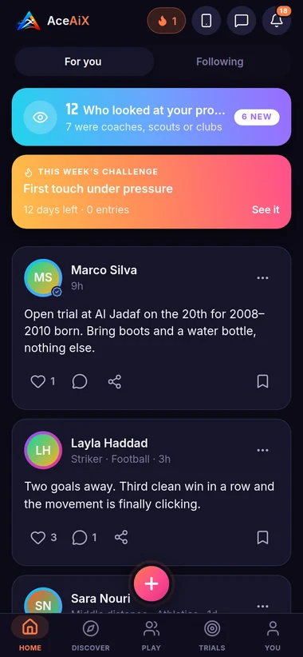
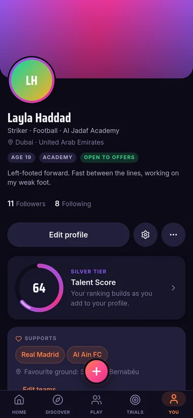
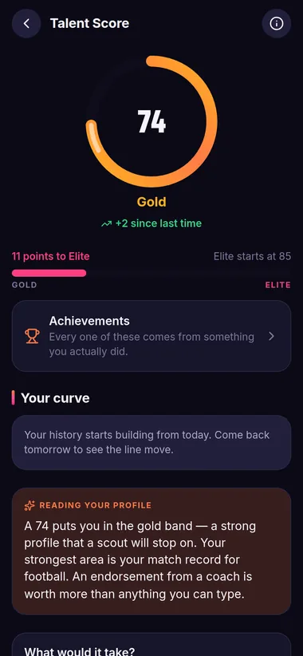
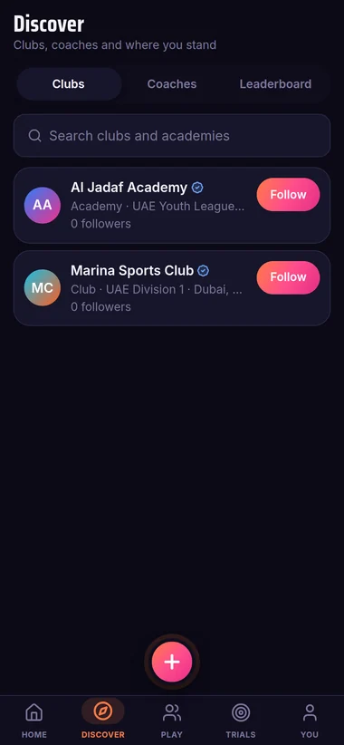
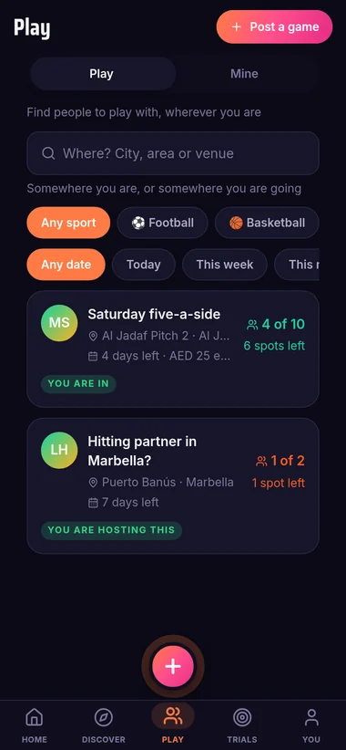
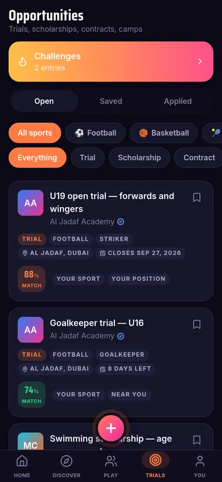
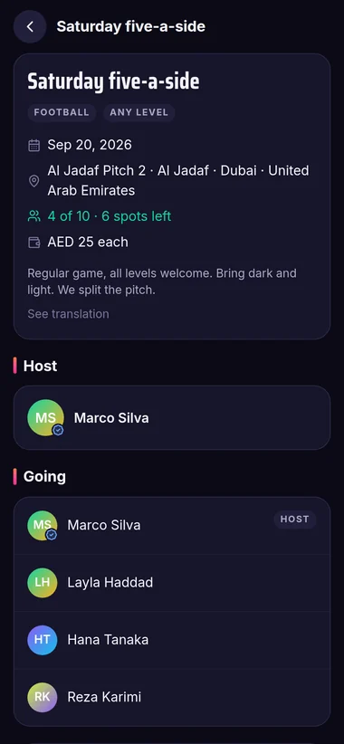

Launching 1 October
For young athletes
Get seen.
Your talent, discovered.
Build your profile, get your Talent Score, and let coaches and clubs find you. Join the early-access list and you are on it from day one.
Free for athletes. 13+. On the App Store and Google Play from 1 October 2026.

- Cost to an athlete
- Free
- Minimum age, checked server-side
- 13+
- Location permission asked for
- None
- Languages, including Arabic
- 7
The Talent Score
A number you can
take apart.
One score out of 100, from five pillars. It is computed in the database and recomputed every time you add something real — a match, a clip, an endorsement. The score screen in the app lists every input that produced it.
You cannot edit it, and nobody can pay to raise it. The score is derived from rows in the database — matches, clips, endorsements, activity — and there is no field anywhere that sets it directly.
It never ranks you against another person. No projections, no comparison to a named professional, no verdict. It is a measure of your profile, not of you.
Every input is listed. Tap the score and you see what counted, what did not, and the next thing that would move it.
For athletes
Everything a coach asks for,
in one place.
Add your sport, position, club and level. Log the matches you have played. Upload a few short clips. That is the profile a scout opens — and it is the same profile the score is built from.
A profile with evidence in it
Sport, position, level, club, honours and languages — then match records with minutes, goals and assists, so your form is visible rather than claimed.
Clips, because coaches watch first
Upload highlights and they sit on your profile where a scout will actually look. Coaches watch before they read.
Trials you can apply to
Real trials, academy places and scholarships posted by clubs — with a match percentage against your own profile, and a way to apply without knowing anybody.





For coaches, scouts and clubs
Find the player,
not the highlight.
Search by sport, position, level and place. Every profile arrives with the evidence attached, so the first conversation is about the player rather than about what they claim.
- →
Post trials, academy places and scholarships. Applicants arrive with their profile, match record, clips and score already attached.
- →
Endorsements you sign. Up to six per athlete, each one a skill you name. Your role is written by the server from your verified profile — never typed by you.
- →
Watchlists. Shortlist quietly, with your own notes. The athlete is never told they were shortlisted.



Play
Someone is short
a player tonight.
Host a game or find one — a sport, a place, a time, and how many people are still needed. Asking to join does not take a spot; the host accepting it does.
Play is eighteen and over, and the database is what enforces it — not a hidden tab. A named venue at a named time is the exact inverse of how we treat a minor's location, so minors are not in it at all.
Safety
Built for
thirteen-year-olds.
These are rules in our database, not settings in the app.
A 13–17 profile is hidden from search until a guardian approves it. Only verified coaches, clubs and scouts can open a conversation with a minor. Exact age and date of birth are never shown to anyone — only a band. And no coordinate, address or postcode column exists for a minor anywhere in the schema, because the safest way to hold a child's location is not to hold it.
A guardian approves three things, separately, and can withdraw any of them at any time.
Discovery
Whether the profile can appear in search at all.
Messaging
Whether a verified coach or club may start a conversation.
Media
Whether clips and photos are visible beyond the account.
- ✓
No adverts, no data selling, no cross-app tracking.
- ✓
No location permission is ever requested. City and country are typed by the user.
- ✓
Export or delete everything from Settings. No email, no form, no waiting.
Pricing
Free for the people
being discovered.
An athlete never pays to have a profile, appear in search, be contacted or apply to a trial. Charging the person hoping to be seen is how this category goes wrong.
Athletes & guardians
- ✓Full profile, clips and match records
- ✓Talent Score with every input shown
- ✓Apply to any trial or scholarship
- ✓Guardian controls, at no cost
Coaches & scouts
- →Search, filters and AI recommendations
- →Watchlists with private notes
- →Post trials and review applicants
Clubs & federations
- →Multi-seat access for your staff
- →Club page, roster and prospect tracking
- →Verified badge after review
One thing worth saying plainly to every family: no genuine club will ever ask you or your child for money to attend a trial. If someone on AceAiX does, report them — the report button is on every profile and every message.
Launching 1 October 2026
Your talent,
discovered.
Free, in seven languages, on iPhone and Android. Thirteen and over, with a guardian's approval for anyone under eighteen.
Free to download, free to be discovered. No adverts, no data selling, and no location permission at any point.
AceAiX is built by AryAiX, an AI venture studio in Dubai — the same team behind CeenAiX in healthcare and NestAiX in property.